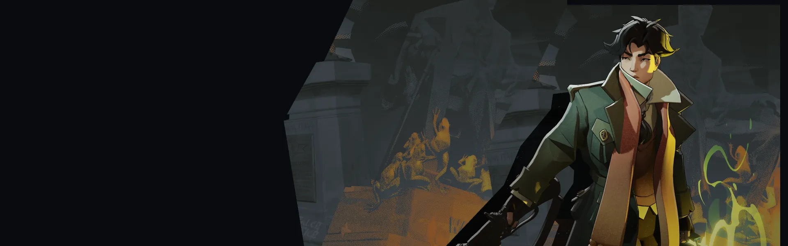

Capa Voadora Flying Cloak Envia uma capa senciente que fere inimigos pelo caminho, e Pocket pode se teleportar até onde ela está. Bolsa do Encantador Enchanter's Satchel Pocket se esconde na mala e causa dano espiritual a inimigos próximos quando termina; qualquer ação o encerra antes. Aflição Affliction Causa dano contínuo a inimigos próximos e impede toda cura enquanto ativo.Emboscadas e reposicionamento esperto.
História
Arin Fairfax, o herdeiro mais velho das Indústrias Fairfax, vive escondido há 5 anos depois de ser baleado e deixado para morrer em seu aniversário de 18 anos. Arin não sabe quem está tentando impedi-los de assumir o controle da empresa de seus pais... mas no ninho de víboras alimentado pela avareza que é a Fairfax Industries, poderia ser qualquer um.
Assumindo o nome de "Pocket", Arin deseja desesperadamente manter sua verdadeira identidade em segredo... não apenas para sua própria proteção; mas porque querem forjar a sua própria identidade separada dos seus pais.
História oficial do jogo, traduzida automaticamente para o português.
Números reais
Habilidades
Canaliza para disparar projéteis espirituais que retardam inimigos ao redor do impacto, com acertos em heróis acumulando um amplificador de dano.
Envia uma capa senciente que fere inimigos pelo caminho, e Pocket pode se teleportar até onde ela está.
Pocket se esconde na mala e causa dano espiritual a inimigos próximos quando termina; qualquer ação o encerra antes.
Causa dano contínuo a inimigos próximos e impede toda cura enquanto ativo.
Builds mais usadas
32.977 partidas registradas com esta build.
Explosão Mística (800) · Espírito Extra (800) · Frente Fria (1.600) · Vulnerabilidade Mística (1.600) · Salto Majestoso (3.200) · Emblema do Encantador (1.600) · Tiro Restaurador (800) · Regeneração Extra (800) · Rodadas Monstruosas (800) · Sacrifício de Cultista (3.200)
30.743 partidas registradas com esta build.
Rodadas Monstruosas (800) · Explosão Mística (800) · Frente Fria (1.600) · Rodadas rápidas (800) · Atacante Rápido (1.600) · Emblema do Encantador (1.600) · Barreira Reativa (1.600) · Regeneração Extra (800) · Tiro Místico (1.600) · Medalhão Restaurador (1.600)
24.072 partidas registradas com esta build.
Regeneração Extra (800) · Explosão Mística (800) · Rodadas Monstruosas (800) · Colete de Batalha (1.600) · Sacrifício de Cultista (3.200) · Atacante Rápido (1.600) · Tiro Restaurador (800) · Emblema do Encantador (1.600) · Vulnerabilidade Mística (1.600) · Frente Fria (1.600)
Confrontos reais
 Shiv — 49.9% de vitória
Shiv — 49.9% de vitória Viscous — 49.3% de vitória
Viscous — 49.3% de vitória The Doorman — 48.9% de vitória
The Doorman — 48.9% de vitória Silver — 48.9% de vitória
Silver — 48.9% de vitória Mirage — 48.9% de vitória
Mirage — 48.9% de vitória Rem — 48.8% de vitória
Rem — 48.8% de vitória
 Graves — 37.5% de vitória
Graves — 37.5% de vitória Rat King — 37.9% de vitória
Rat King — 37.9% de vitória Paige — 38.9% de vitória
Paige — 38.9% de vitória Seven — 39.7% de vitória
Seven — 39.7% de vitória Victor — 39.9% de vitória
Victor — 39.9% de vitória Kelvin — 40.0% de vitória
Kelvin — 40.0% de vitória
Ver a página de counters do Pocket
O que upar primeiro
Nível por nível, na ordem que os jogadores mais usam em partidas de verdade. A porcentagem mostra quantos escolheram aquela habilidade naquele nível.
Melhores duplas
Heróis que mais ganham jogando junto com ele, em partidas reais (pelo menos 1.500 partidas juntos).
- Graves52,2%
- Rat King51,8%
- Paige49,5%
- Seven49,2%
 Haze48,9%
Haze48,9%
- Mirage38,7%
- Shiv39,7%
 Paradox39,8%
Paradox39,8%
Rota (lane)
Na rota, cada lado joga em dupla. Estes números são de confrontos reais: a diferença de almas é medida com o jogo já começado, então almas no verde significa que ele costuma estar na frente.
- Graves — 34,7% de vitória +387 almas (1.693 partidas)
- Rat King — 37,1% de vitória −120 almas (6.603 partidas)
 Baba — 40,4% de vitória +5 almas (379 partidas)
Baba — 40,4% de vitória +5 almas (379 partidas)- Haze — 41,0% de vitória +129 almas (3.712 partidas)
 Lash — 41,3% de vitória +112 almas (1.086 partidas)
Lash — 41,3% de vitória +112 almas (1.086 partidas)- Seven — 44,5% de vitória +648 almas (400 partidas)
 Venator — 44,7% de vitória +35 almas (1.236 partidas)
Venator — 44,7% de vitória +35 almas (1.236 partidas) Deadman Danny — 45,3% de vitória +617 almas (868 partidas)
Deadman Danny — 45,3% de vitória +617 almas (868 partidas)
 Billy — 56,4% de vitória +663 almas (181 partidas)
Billy — 56,4% de vitória +663 almas (181 partidas)- Silver — 55,8% de vitória +578 almas (172 partidas)
 Infernus — 55,4% de vitória +488 almas (157 partidas)
Infernus — 55,4% de vitória +488 almas (157 partidas)
Histórico de win rate
21/09: 48.1% → 09/11: 48.1% → 28/12: 47.1% → 15/02: 48.5% → 05/04: 47.7% → 24/05: 47.5% → 12/07: 46.3% → 30/08: 45.6% → 18/10: 44.5%